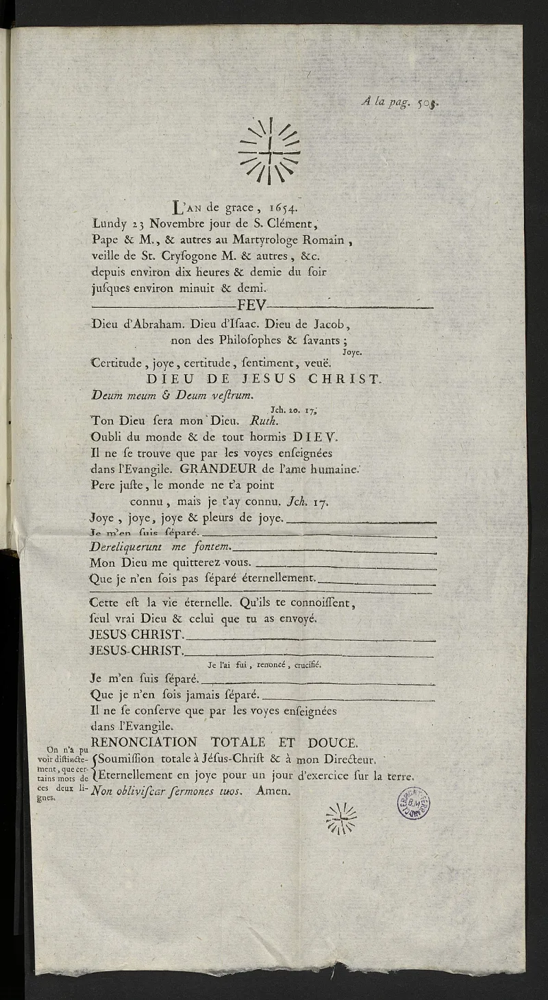
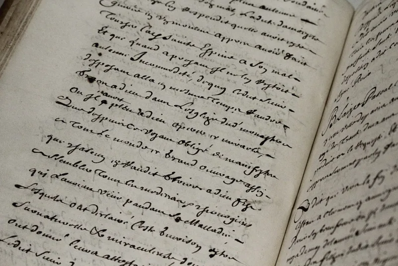

This Christian argument does not hold up. Drop it.
"You might as well believe. If you're wrong, you lose nothing." Used as an opener, that fails in three ways, and skeptics know all three.
Many gods: the same bet works for Allah, for Vishnu, or for a god who rewards honest doubt and punishes hedged belief. So the wager alone picks no religion.
Belief is not a switch: nobody can sincerely believe something for prize money, as the person being lectured is vividly aware. And it is mercenary: it sells faith as fire insurance, which misrepresents a Gospel whose call is to love God (Deuteronomy 6:5).
Pascal knew all of this. The wager sits in the Pensées, fragment 233, aimed at one particular reader.
The sophisticated Parisian too indifferent to look into the question. Its real job is anti-apathy.
It says the question is not optional, and the stakes make honest inquiry a duty. Then Pascal prescribes practice and inquiry, not instant belief.
Peter Kreeft has reconstructed that limited use sympathetically.
The objections are sound against the street version. The wager is decision theory with a rigged table, since it assumes exactly two live options.
It demands belief as an act of will, which is impossible. And a God fooled by self-interested compliance is not worth believing in.
An all-knowing being would presumably prefer honest disbelief to strategic pretence. Even the rescued use has a limit.
It motivates inquiry, and inquiry may honestly end against faith. You cannot then re-invoke the wager to overrule the verdict it asked for.
Slot matters. Last word to someone apathetic.
Never first word to a skeptic. The salvage is real.
At the end of a talk with a genuinely undecided person, Pascal's actual point stands. This question is too important to be indifferent about.
"I'm not asking you to bet. I'm asking whether the question is worth your serious attention."


The wager assumes two options, and you cannot choose to believe anyway.
The skeptic's objections are sound against the popular version. The wager is decision theory with a rigged board, since it assumes exactly two live options. It asks you to believe by an act of will, which cannot be done.
And the God it pictures — one taken in by self-serving compliance — is not worth believing in. A God who knows everything would surely prefer honest doubt to playing along.
Even the salvaged use, as a cure for not caring, has a limit. It sends a person to look into the question, and looking may honestly end in no. The wager cannot then be brought back to overrule the verdict it asked for.
Don't open with it: this is a last word to the apathetic, not a first.
Don't use it as an opener or as a proof. It is graded 'Don't use' because in its common street form the skeptical counters succeed.
The salvage is real, and Peter Kreeft has rebuilt it sympathetically. At the end of a talk with a genuinely undecided person, Pascal's actual point is honest and effective. This question is too important for a shrug, so look into it seriously. Slot matters. Last word to the apathetic, never first word to the skeptic.